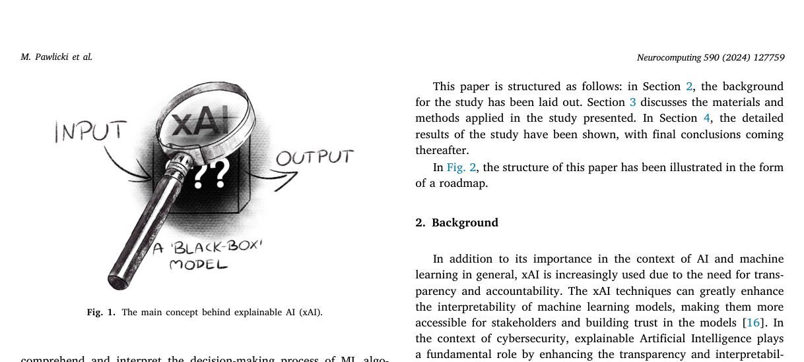
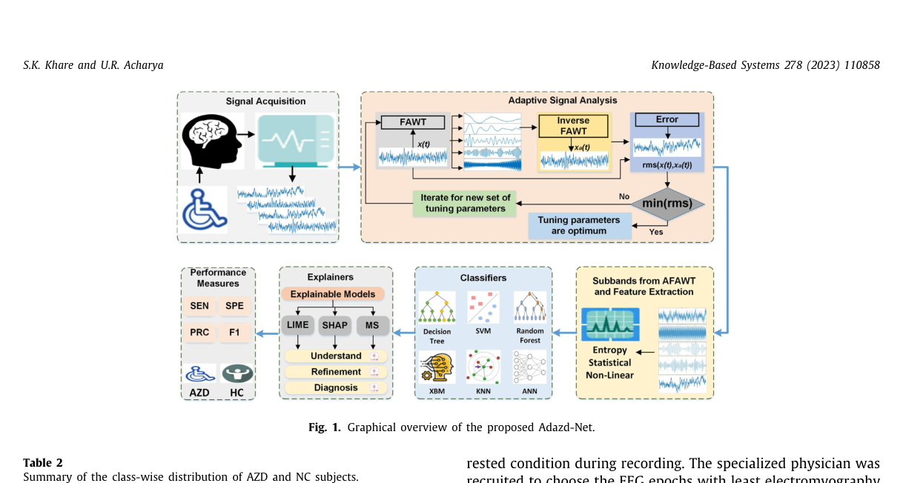

A linear transportation Lp distance for pattern recognition
Pattern Recognition
A too-good-to-be-true prior to reduce shortcut reliance
Pattern Recognition Letters
Enhancing vessel arrival time prediction: A fusion-based deep learning approach
Expert Systems With Applications

Advanced insights through systematic analysis: Mapping future research directions and opportunities for xAI in deep learning and artificial intelligence used in cybersecurity
Neurocomputing
GKF-PUAL: A group kernel-free approach to positive-unlabeled learning with variable selection
Information Sciences

Adazd-Net: Automated adaptive and explainable Alzheimer’s disease detection system using EEG signals